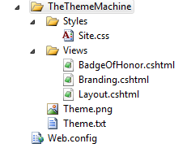
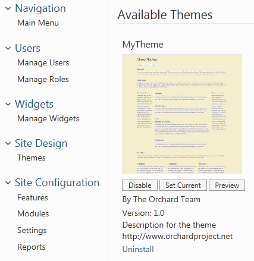

The default Orchard theme is called The Theme Machine. It is designed as a versatile starting point for customizing and developing themes.
This article introduces The Theme Machine and demonstrates how to create your own theme by customizing The Theme Machine style sheet (Site.css).
Introducing the Theme Machine
The Theme Machine provides a flexible and powerful foundation for themes. The following image shows the file structure.

The files at the heart of the Theme Machine are the layout page (Layout.cshtml) and style sheet (Site.css).
Overview of the Layout Page
The layout page defines multiple zones. Each zone has a conditional statements, so that it renders if and only if it has content. If you don't provide the content, the rendered page will not contain the zone. The following images show the zones.

This live demo site shows the anatomy of a theme.
- Zones and their children have an aqua background,
- widgets & content-items have a red border, and
- a gradual lightening from black indicates the topography.
- You can click through the menu to view zones collapse when they lack content.
You will typically provide content for zones by using the Admin Panel.
Overview of the CSS Styles
The style sheet (Site.css) for the Theme Machine provides an extensive set of styles for fine-grained control of the look and feel of your website. The style sheet groups styles to make it easier for you to locate a style that you want to customize. The following table shows the groupings and describes the type of styles available to you.
| Grouping | Description |
|---|---|
| General | Contains the default styles for the body, headings, lists, and text elements. |
| Forms | Contains styles related to HTML forms, such as form, legend, fieldset, label, and input. |
| Structure | Contains page layout styles for each of the zones defined in the Theme Machine. |
| Main | Contains styles defined for blog posts, comments, tagged search, and search results. |
| Secondary | Contains additional layout styles for secondary content in aside zones, tripel zones, and footer quad zones. |
| Widgets | Contains styles for selected widgets such as the search widget, edit-mode widgets, and content mode. |
| Pager | Contains styles related to a pager shape. |
| Misc | Contains styles for miscellaneous formatting, such as small, large, quiet, and highlight. |
Creating a Child Theme
You can create your own theme by customizing the Theme Machine. However, you should not edit the Theme Machine files directly. Instead, you should create a child theme and copy any files that you intend to change into the child theme. You don't need to copy any files that you do not intend to change -- a child theme inherits from its parent theme, and overrides just the files from the parent theme that you have customized. When your child theme is active as the current theme, Orchard first looks to that theme to resolve files, and if not found, it will look to the parent (BaseTheme) to find the files instead (and so on... even your parent theme can have it's own parent).
The process of creating a child theme is this:
- Generate the child theme's code structure using the command-line CodeGen utility.
- Copy the files you want to change from the Theme Machine to your child theme.
- Edit the files in the new child theme.
- Apply the new theme to your website.
Generating the Theme Structure
To generate the code structure for your new theme, we are going to use the Code Generation feature, which can be obtained from the Gallery > Modules page in the admin panel. Once you have installed and activated the code generation feature, you will be able to generate a new theme from the Orchard command-line. Refer to the Using the command-line interface topic if you need to know more about using commands in Orchard.
Open the Orchard command-line utility and enter the following command:
codegen theme MyTheme /BasedOn:TheThemeMachine
If you are using Visual Studio for editing (or if you plan for your Theme to eventually contain code files too), you may also want specify the CreateProject and IncludeInSolution options as follows:
codegen theme MyTheme /BasedOn:TheThemeMachine /CreateProject:true /IncludeInSolution:true
This line tells Orchard to create the code structure for a new theme, sets the name of the theme to MyTheme, and directs Orchard to base the theme on TheThemeMachine. The CodeGen command generates the following folder structure:

The only files created are the Theme.txt and Views\Web.config files. The Theme.txt file (the theme manifest) is where the Admin Panel looks for information such as the name of the theme. This is also where your BaseTheme is specified. Web.config is a configuration file that ASP.NET MVC requires for rendering any views placed in the Views folder. You seldom have to make changes in the Web.config file.
Copying Files from the Theme Machine
To keep this example simple, the only file you will customize will be the Site.css file. Copy the Site.css file from TheThemeMachine\Styles folder to the MyTheme\Styles folder.
Currently, you must also copy the TheThemeMachine\Views\Layout.cshtml file to the MyTheme\Views folder. (It's anticipated that this step will not be required in later releases.)
Customizing Theme Files
After copying the files you want to customize into your new theme folder, you can make changes to those files. You can also create new files as needed. In this example, the only change you will make is the background color for the body of the page.
In the Site.css file that you copied, find the body style in the General section. Then change the background color from #fff to #fff8dc as shown in the following example:
body {
font-size: 81.3%;
color: #434343;
background: #fff8dc;
font-family: Tahoma, "Helvetica Neue", Arial, Helvetica, sans-serif;
}
This will change the background color to cornsilk, which is a light yellow.
You can also provide a thumbnail image of your new theme in the theme's root folder. The image file must be named Theme.png. The image will be displayed in the Admin Panel to help users select a theme.
The following image was copied from TheThemeMachine and changed to show the light-yellow background color.

Applying Your New Theme
In the Admin Panel, under Themes, select Installed. The Installed tab will display the new theme under the Available Themes:

Click Set Current. The Installed tab is redisplayed showing MyTheme as the current theme.
You can now go to your website to see the new theme in action.
Change History
- Updates for Orchard 1.8
- 9-8-14: Updated screen shots for Customizing Default Theme.